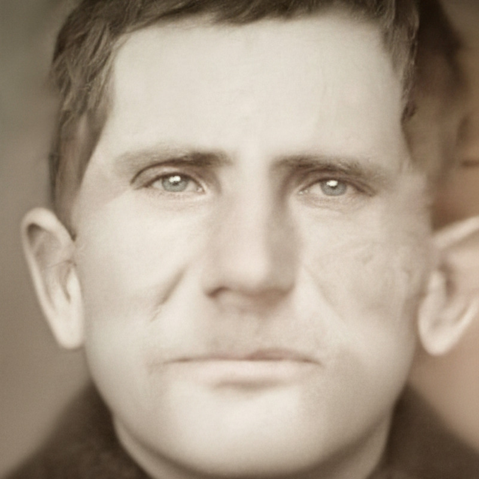

Петр Федорович Орлов

Также известен под фамилией Брылёв. Родился в 1893 г. в с. Нижняя Залегощь Новосильского уезда Тульской губернии (ныне Орловская область) и был, вероятнее всего, самым младшим ребёнком в семье. Его родители, Фёдор Григорьевич и Ксения Ивановна, были родом из того же села и происходили из новосильских казаков.* Помимо Петра, известны имена других детей в семье: Фёдор, Марфа (1884), Вера (1890), возможно, также Семён и Никифор.
В мае 1912 г., ещё при царской власти, Пётр Фёдорович впервые женился. Его юной избраннице, Ульяне (Улите) Гавриловне Федосовой, на тот момент было всего 16 лет. В 1915 г. в семье родился первенец Иван. Прожил он, правда, всего два месяца и умер «от слабости рождения». Если у пары рождались и другие дети, никому из них, похоже, не удалось дожить до взрослого возраста. А вскоре, примерно в начале 1920-х гг., умерла и сама Ульяна Гавриловна.
Вероятно, там же, в своём родном селе, Пётр Фёдорович встретил и вторую супругу — Марию Дмитриевну (девичья фамилия неизвестна). Поженились они около 1925 г. Супруга родила Петру по меньшей мере троих детей: дочерей Матрёну (1926–2021) и Ольгу (1928–~2015), а также младшего сына Ивана.
За два десятилетия до рождения Петра Фёдоровича, а именно в 1870 г., в районе нынешнего посёлка Залегощь была открыта железная дорога и одноимённая железнодорожная станция. По сведениям интернет-портала «Открытый список», именно на этой станции Пётр Фёдорович работал бригадиром пути. Уточняется, что проживал он также на железной дороге, то есть, вероятно, в предоставленном от работы жилье. Однако в 1937 г., в разгар сталинских репрессий, Пётр был осуждён. Причина преследования неизвестна, но судя по аналогичным делам того времени, оно едва ли имело под собой веские основания. Так или иначе, по решению суда Пётр Фёдо-рович был отправлен в исправительно-трудовой лагерь на 8 лет.
Последние вести от Петра Фёдоровича и его последнее фото (на нём ему 48 лет) родные получили в 1941 г. К тому моменту с него уже сняли конвой, так как он заболел дизентерией — тяжёлым кишечным заболеванием, которое с трудом поддавалось лечению. В своём последнем письме Пётр просил прислать ему сухарей. Вероятно, вскоре после этого он скончался.
Репрессии в отношении Петра Фёдоровича отразились на всей семье. После его ареста у супруги и детей отобрали жильё, а его родные братья, спасаясь от преследования, сменили фамилии. Вскоре все они отправились жить в Донбасс, в г. Енакиево, так как там можно было свободно получить новый паспорт и работу.
Сведения о Петре Фёдоровиче и его аресте были внесены в базу данных жертв политических репрессий.
* Практически все предки Петра Фёдоровича, которых удалось найти, были родом из с. Нижняя Залегощь.